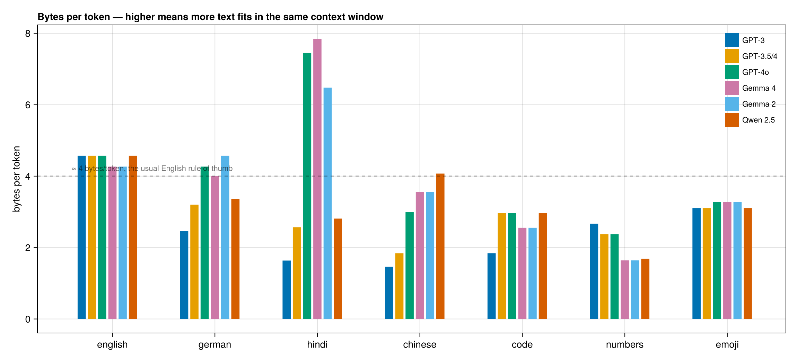
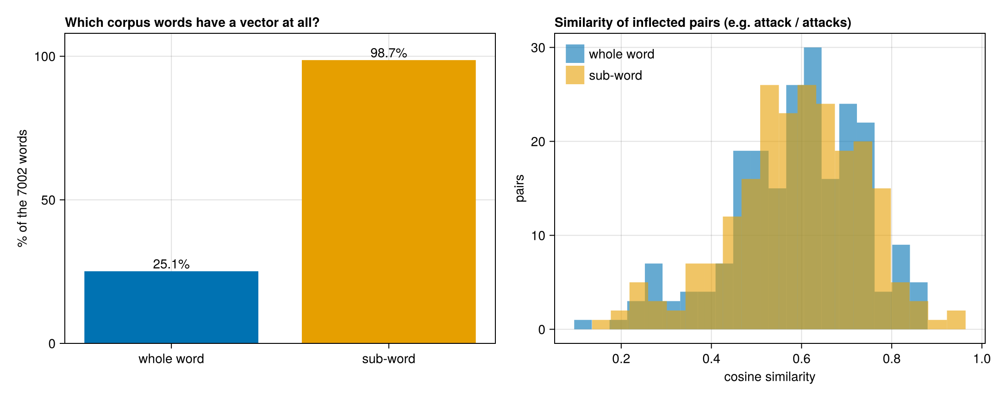

Tokenizer experiments
tokenize in this package is the simplest thing that works: lowercase, letters only, split at full stops. Real models use reversible sub-word tokenizers, and those can be loaded and run from Julia directly — only the tokenizer files are needed, a few MB each, never the model weights.
Loading a real tokenizer
using CustomTokenizer
gemma = load_hf_tokenizer(hf_download("google/gemma-4-E2B", "tokenizer.json"))
gpt3 = load_hf_tokenizer(hf_download("gpt2", "tokenizer.json")) # = r50k_base
encode(gemma, "the cat drinks milk") # [818, 3811, 40740, 12558]
token_strings(gemma, "the cat drinks milk") # ["the", "▁cat", "▁drinks", "▁milk"]
decode(gemma, encode(gemma, "the cat drinks milk"))load_hf_tokenizer reads the vocabulary and merge list out of a tokenizer.json and reproduces the reference implementation exactly — the test suite checks ids, pieces and decoded text against output recorded from Hugging Face's Rust tokenizers, for GPT-2, Gemma 4 and Qwen 2.5.
What differs between them is what happens around the merges: whether bytes are mapped to glyphs (GPT-2, Qwen) or spaces rewritten as ▁ (Gemma), whether text is cut by a regex first, and what is done with characters the vocabulary lacks. BPETokenizer keeps those as flags.
julia --project=. experiments/tokenizer_zoo.jl # the tables below
julia --project=. experiments/analogy_tokens.jl # single-token analysisHow the same text is cut up
Tokens needed for the same sentence in several languages:
| text | GPT-3 | Gemma 4 | Gemma 2 | Qwen 2.5 |
|---|---|---|---|---|
| english | 14 | 14 | 14 | 14 |
| german | 26 | 15 | 13 | 19 |
| hindi | 91 | 18 | 22 | 53 |
| chinese | 39 | 15 | 15 | 14 |
| code | 50 | 35 | 35 | 31 |
| numbers | 24 | 38 | 38 | 38 |
(counted without the automatic <bos>, which Gemma adds when asked for special tokens — worth knowing, because it silently shifts every count by one.)
The same Hindi sentence costs 91 tokens on GPT-3 and 18 on Gemma 4 — a 5× difference in price and context for identical content, while English is 14 everywhere. Gemma spends more on numbers because it splits every digit: 2026 → 2 0 2 6, which keeps arithmetic uniform at the cost of length.

Other things the probes show: every real tokenizer round-trips exactly (decode(encode(x)) == x, 7/7), unknown characters fall back to UTF-8 bytes rather than an unknown token, and runs of spaces survive — which is why the code sample costs GPT-3 50 tokens and everyone else about 31.
Does the tokenizer change the vectors?
experiments/tokenize_corpus.jl tokenizes one corpus two ways — whole words, and Gemma 4 sub-word pieces — and experiments/subword_vs_word.jl trains the same model on each. Both streams are lowercased, so the only variable is the unit.
On the Lee news corpus (60k words):
| whole word | sub-word | |
|---|---|---|
| vocabulary kept | 1,759 words (min_count 5) | 8,062 pieces |
| tokens produced | 60,302 | 75,914 (1.26×) |
| corpus words with a vector | 25.1% | 98.7% |
| of the 5,243 rare words | 0% | 98.3% |
Three quarters of the word types in the corpus occur fewer than five times. The whole-word model discards all of them; the sub-word model composes them from pieces it knows. That coverage gap is the real payoff — not better vectors for common words.

Morphology, the usual argument for sub-words, barely moves here:
219 inflected pairs found (act/acting, action/actions, airline/airlines, …)
they share a piece in 3 of them (1%)
mean similarity, whole-word +0.588
mean similarity, sub-word +0.590Gemma's vocabulary is so large that 81% of these words are a single piece — attacks is one token, not attack+s — so there is nothing to share. Sub-word units help morphology only when the vocabulary is small enough to force splits.
And pooling pieces has a failure mode worth seeing:
commandos ▁command+os -> command (0.95), cocos (0.93), palos (0.87)
gilchrist ▁gil+christ -> matthew (0.96), adam (0.96), hayden (0.92)
collins ▁coll+ins -> escorted (0.90), ashes (0.90), tarpaulins (0.90)gilchrist lands among cricketers, which the corpus context earned. collins lands near tarpaulins — pure spelling overlap through the ins piece. Averaging pieces always gives you a vector; sometimes it is a vector of the spelling rather than the meaning.
A note on method: the piece vocabulary is not filtered by frequency, because a real tokenizer's vocabulary is fixed before training rather than derived from the corpus. Apply min_count = 5 to pieces as well and the coverage advantage largely disappears, since a word seen twice usually has pieces seen twice.